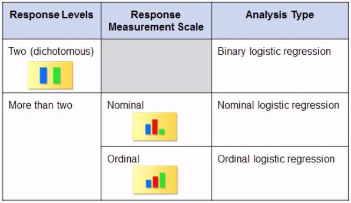
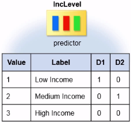

Categorical Data Analysis
When you response variable is categorical, you need to use a different kind of regression analysis: logistic regression.
Describing Categorical Data¶
When you examine the distribution of a categorical variable, you want to know the values of the variable and the frequency or count of each value in the data (one-way frequency able).
1 2 3 4 | PROC FREQ DATA=SAS-data-set;
TABLES variable1 variable2 variable3 </options>;
<additional statements>
RUN;
|
To look for a possible association between two or more categorical variables, you can create a crosstabulation/contingency table (when it displays statistics for two variables is also called two-way frequency able).
1 2 3 4 | PROC FREQ DATA=SAS-data-set;
TABLES variable-rows*variable-columns </options>;
<additional statements>
RUN;
|
Two distribution plots are associated with a frequency or crosstabulation table: a frequency plot, PLOTS=(FREQPLOT), and a cumulative frequency plot.
In PROC FREQ output, the default order for character values is alphaumeric. To reorder the values of an ordinal variable in your PROC FREQ output you can:
- Create a new variable in which the values are stored in logical order
- Apply a temporary format to the original variable
- How to replace the variable's name with the variable's label in
PROC FREQoutput
1 2 3 4 | options validvarname=any;
PROC FREQ DATA=SAS-data-set (RENAME=(variable1="Label variable 1"n variable1="Label variable 1"n));
TABLES "Label variable 1"n;
RUN;
|
- Count the distinct values of a variable: The question of how to count distinct values of a
CLASSorBYvariable using eitherPROC MEANSorPROC SUMMARYis asked frequently. While neither of these procedures has this ability,PROC SQLcan count these values using theDISTINCToption andPROC FREQusing theNLEVELSoption.
Tests of Association¶
Pearson Chi-square Test¶
To perform a formal test of association between two categorical variables, you use the (Pearson) chi-square test which measures the difference between the observed cell frequencies and the cell frequencies that are expected if there is no association between variables ($H_0$ is true): $Expected=Row \ total\cdot Column\ total/Total \ sample \ size$
- If the sample size decreases, the chi-square value decreases and the p-value for the chi-square statistic increases
- Hypothesis testing: $H_0$: no association; $H_a$: association
Cramer's V statistic¶
It is one measure of strength of an association between two categorical variables:
- For two-by-two tables, Cramer's V is in the range of -1 to 1
- For larger tables, Cramer's V is int he range of 0 to 1
- Values farther away from 0 indicate a relatively strong association between the variables
To measure the strength of the association between a binary predictor variable and a binary outcome variable, you can use an odds ratio: $Odds \ Ratio=\frac{Odds \ of \ Outcome \ in \ Group \ B}{Odds \ of \ Outcome \ in \ Group \ A}$; $Odds=p_{event}/(1-p_{event})$
- The value of the odds ratio can range from 0 to $\infty$; it cannot be negative
- When the odds ratio is 1 , there is no association between variables
- When the odds ratio >1/<1, the group in the numerator/denominator is more likely to have the outcome
- The odds ratio is approximately the same regardless of the sample size
- To estimate the true odds ratio while taking into account the variability of the sample statistic, you can calculate confidence intervals
- You can use an odds ratio to test for significance between two categorical variables
- Odds ratio expressed as percent difference: $(odd \ ratio -1) \cdot 100$
1 2 3 4 | PROC FREQ DATA=SAS-data-set;
TABLES variable-rows*variable-columns / CHISQ EXPECTED </options>;
<additional statements>
RUN;
|
CHISQproduces the Pearson chi-square test of association, the likelihood-ratio chi-square and the Mantel-Haenszel: $\sum \frac{(obs. \ freq. - exp. \ freq.)^2}{exp. \ freq.}$EXPECTEDprints the expected cell frequenciesCELLCHI2prints each cell's contribution to the total chi-square statistic: $ \frac{(obs. \ freq. - exp. \ freq.)^2}{exp. \ freq.}$NOCOL/NOROWsuppresses the printing of the column/row percentagesNOPERCENTsupresses the printing of the cell percentagesRELRISK(relative risk) prints a table that contains risk ratios (probability ratios) and odds ratios;PROC FREQuses the classification in the first column of the crosstabulation table as the outcome of interest and the first/second row in the numerator/denominator
Mantel-Haenszel chi-square test¶
For ordinal associations, the Mantel-Haenszel chi-square test is a more powerful test.
- The levels must be in a logical order for the test results to be meaningful
- Hypothesis testing: $H_0$: no ordinal association; $H_a$: ordinal association
- Similarly to the Pearson case, the Mantel-Haenszel chi-square statistic/p-value indicate whether an association exists but not its magnitude and they depend on and reflect the sample size
To measure the strength of the association between two ordinal variables you can use the Spearman correlation statistic.
- You should only use it if both variables are ordinal and are in logical order
- Is considered to be a rank correlation because it provides a degree of association between the ranks of the ordinal variables
- This statistic has a range between -1 and +1: values close to -1/+1 indicate that there is a relatively high degree of negative/positive correlation and values close to 0 indicate a weak correlation
- It is not affected by the sample size
1 2 3 4 | PROC FREQ DATA=SAS-data-set;
TABLES variable-rows*variable-columns / CHISQ EXPECTED </options>;
<additional statements>
RUN;
|
MEASURESproduces the Spearman correlation statistic along with other measurement of associationCLproduces confidence bounds for the statistics that the MEASURES option requests- The confidence bounds are valid only if the sample size is large (>25)
- The asymptotic standard error (ASE) is used for large samples and is used to calculate the confidence intervals for various measures of association (including the Spearman correlation coefficient)
Introduction to Logistic Regression¶
Logistic Regression is a generalized linear model (like Linear Regression or ANOVA) that you can use to predict a categorical response/outcome based on one or more continuous/categorical predictor variables. There are three models:

Linear vs Logistic¶
Linear Regression Model¶
- Assumes that the expected value of the response continuous variable ($Y$) has a linear relationship with the predictor variable ($X$)
- The conditional mean of the response hast the linear form $E(Y|X)=\beta_0+\beta_1X$ and it ranges $(-\infty,+\infty)$
Why not to use Linear Regression to model a binary response variable
Following the Linear Regression Model scheme, the response variable is calculated as
$Y_i=\beta_0+\beta_1\cdot X_i+\epsilon_i$,
where $\beta_0$ and $\beta_1$ are obtained by the method of least squares.
- This model assumes that the data is continuous, which is not true for the case of binary data
- This model assumes that the mean of the response is $\beta_0+\beta_1\cdot X$, while for binary data the mean of the response is the probability of a success
- If the response variable has only two levels, you cannot assume the constant variance and normality that are required for linear regression
Binary Logistic Regression Model¶
- The predictor variable ($X$) is used to estimate the probability of a specific outcome ($p$) for which you need to use a nonlinear function
- The mean of the response is a probability, which is between $(0, 1)$.
- The Inverse Logit Function binds the linear predictor between $0$ and $1$ is defined as $p_i=(1+e^{-(\beta_0+\beta_1 X_i)})^{-1}$
- This model applies a Logit Transformation to the probabilities $logit(p_i)=ln\left ( \frac{p_i}{1-p_i} \right ) = \beta_0+\beta_1X_i$, so that the transformed probabilities and predictor variables end up with a linear relationship
- The logit is the natural log of the odds (the probability of the event occurring divided by the probability of the event not occurring)
- We make the assumption that the logit transformation of the probabilities results in a linear relationship with the predictor variables (we can use a linear function $X$ to model the logit in order to indireclty model the probability)
- The logit of the probability transforms the probability into a linear function, which has no lower or upper bounds. So a logit has no lower or upper bounds.
PROC LOGISTIC¶
To model categorical data yu use the LOGISTIC procedure. Some of the most common statements of this procedure are shown here:
1 2 3 4 5 6 | PROC LOGISTIC DATA=SAS-data-set <options>; CLASS variable <(variable_options)> ... </ options>; MODEL response <(variable_options)> = predictors </ options>; UNITS independent1=list... </ options>; ODDSRATIO <'label'> variable </ options>; RUN; |
CLASSis used to define the classification (categorical) predictor variables (if any); this statement must precede theMODELstatementCLODDS = PL(profile likelihood) |WALD(default) |BOTHis an example of a general option that you can specify in theMODELstatement which computes confidence intervals for the odds ratios of all predictor variables and also enables the production of the odds ratio plot
Example:
1 2 3 4 | PROC LOGISTIC DATA=statdata.sales_inc PLOTS(ONLY)=(EFFECT ODDSRATIO);
CLASS gender;
MODEL purchase(EVENT='1')=gender / CLODDS=PL;
RUN;
|
Classification Variables Parametrization¶
When the predictor variable is categorical, the assumption of linearity cannot be met. To get past the obstacle of nonlinearity, the CLASS statement creates a set of one or more design variables (also called dummy variables). PROC LOGISTIC uses these variables, and not the original ones, in model calculations.
Different parametrization methods for the classification variables will produce the same results regarding the significance of the categorical predictors, but understanding the parametrization method helps to interpret the results accurately.
Here we present two of the most common methods of parameterizing (PARAM =) the classification variables. For both of them:
- The default reference level is the level that has the highest ranked value (or the last value) when the levels are sorted in ascending alphanumeric order
- The number of design variables that are created are the number of levels of the classification variable -1
Effect coding (default)¶
Also called deviation from the mean coding, it compares the effect of each level of the variable to the average effect of all levels.
Example
Using this parametrization scheme the model will be described as follows
$logit(p)=\beta_0+\beta_1\cdot D_{Low \ Income} + \beta_2\cdot D_{Medium \ Income}$

- $\beta_0$ is the average value of the logit across all income levels
- $\beta_1$ is the difference between the logit for income level 1 and $\beta_0$
- $\beta_2$ is the difference between the logit for income level 2 and $\beta_0$
Here's the Analysis of Maximum Likelihood Estimates table that PROC LOGISTIC generates for this example on which the parameter estimates ($\beta_0$, $\beta_1$, $\beta_2$) and p-values reflect differences from the overall mean value over all levels.

The p-values indicate whether each particular level is significant compared to the average effect of all levels. The p-values for $\beta_1$ and $\beta_2$ not significant meaning that the effect of those levels is not different than the average effect of low, medium and high income.
Reference cell coding¶
It compares the effect of each level of the predictor to the effect of another level that is the designated reference level.
Example
To use this scheme the classification variable has to be defined in the following way
CLASS gender (PARAM=REF REF='Male');
Using this parametrization scheme the model will be described as follows
$logit(p)=\beta_0+\beta_1\cdot D_{Low \ Income} + \beta_2\cdot D_{Medium \ Income}$

- $\beta_0$ is the intercept, but not in terms of where you cross the $Y$ axis, instead is the value of the logit of the probability when income is high (or at the reference level)
- $\beta_1$ is the difference between the logit of the probability for low and high income
- $\beta_2$ is the difference between the logit of the probability for medium and high income
Here's the Analysis of Maximum Likelihood Estimates table that PROC LOGISTIC generates for this example on which the parameter estimates ($\beta_0$, $\beta_1$, $\beta_2$) and p-values reflect differences with respect to the reference level.

The p-values indicate whether each particular level is significant compared to the reference level. The p-value for $\beta_1<0.05$ is significant meaning that the effect of a low income is statistically different than the effect of a high income on the probability that people will spend at least $100\$$. The same applies to $\beta_2$.
Multiple Logistic Regression¶
- Identifying the use and types of logistic regression
- Fitting a binary logistic regression model using the
LOGISTICprocedure - Explaining effect and reference cell coding for classification variables
- Explaining the standard output from the
LOGISTICprocedure